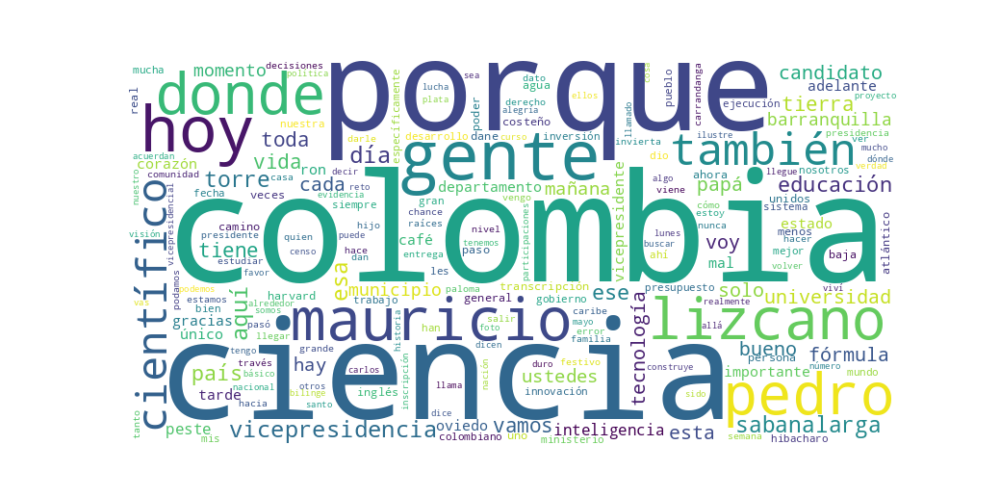

Seguidores: 22,429
Reporte de Análisis de Comunicación – Candidato a Vicepresidencia Pedro De La Torre
1. Perfil de Comunicación: El candidato emplea un estilo de comunicación híbrido, combinando un registro formal-académico cuando aborda temas de política pública y ciencia, con un lenguaje informal, cercano y coloquial típico de la costa Caribe colombiana. Utiliza expresiones como “pelao'”, “vaina”, “pa’lante”, “chévere” y “carrandanga”, lo que proyecta autenticidad y conexión emocional con su región de origen. Sin embargo, en intervenciones más estructuradas (entrevistas, debates) adopta un tono técnico, fundamentado en datos y evidencias. Su comunicación es deliberadamente emotiva y personal, basada en relatos de vida, lo que humaniza su perfil de científico.
2. Temas Principales: - Ciencia, Tecnología e Innovación: Aborda este tema como pilar de desarrollo nacional. Ejemplo: Denuncia el “apagón científico” por la baja ejecución presupuestal de Minciencias y propone “revivir” esta cartera para impulsar inteligencia artificial y soberanía farmacéutica. - Educación: La presenta como “la llave para todos” y la herramienta que lo sacó de la pobreza. Relata anécdotas personales, como el consejo de su padre para priorizar los estudios sobre el trabajo temprano. - Gestión Pública Basada en Evidencia: Critica la politización de la administración y promueve decisiones “basadas en datos”. Ejemplo: Señala los errores del censo del DANE en el gobierno de Oviedo y sus impactos en la distribución inequitativa de recursos. - Representación Regional (Costa Caribe): Reivindica su origen costeño como ventaja y compromiso. Usa consignas como “el único vicepresidente costeño” y destaca la necesidad de llevar la voz de la región al centro del poder. - Servicio y Liderazgo Humilde: Vincula el liderazgo con el servicio, la gratitud y el retorno a las raíces. Publicaciones sobre visitas a su tierra (Sabanalarga, Hibacharo) refuerzan un discurso de cercanía y compromiso social.
3. Tono y Sentimiento Dominante: El tono general es propositivo y esperanzador, pero con un fuerte componente crítico hacia la gestión estatal actual, especialmente en ciencia y gestión de datos. Muestra orgullo regional y un optimismo combativo, usando eslóganes como “vamos pa’lante”. En momentos de denuncia (ej. falta de agua potable) adopta un tono de urgencia e indignación moral. Predomina una narrativa de superación personal que busca inspirar confianza.
4. Palabras Clave de Poder: - “Ciencia, Tecnología e Innovación” / “Ciencia y datos” - “Vamos pa’lante” - “Vicepresidente costeño” / “Orgullo costeño” - “Educación es la llave” - “Basado en evidencia” - “Raíces” / “Origen” - “Colombia real” - “Transformación real”
5. Conclusión Estratégica: La estrategia de comunicación de Pedro De La Torre se centra en construir una identidad dual: el científico riguroso y el hijo humilde del Caribe que no olvida sus raíces. Su discurso busca atraer tanto a un electorado joven y educado que valora la tecnocracia y la innovación, como a las comunidades regionales que se sienten marginadas del centro político. Al enfatizar su historia personal de movilidad social a través de la educación, apela a la aspiración de progreso de las clases populares. Finalmente, su alianza con Mauricio Lizcano la presenta como una fórmula complementaria (“visión estratégica + táctica técnica”), buscando posicionarse como la opción moderna, preparada y con arraigo popular, que promete un gobierno eficiente y cercano.
Reporte de Análisis de Comunicación: Corpus del Éxito
1. Resumen del Patrón de Éxito:
El contenido más exitoso del candidato se basa en una fórmula de autenticidad narrativa y cercania emocional. Los videos no son discursos políticos abstractos, sino relatos personales íntimos que conectan su trayectoria profesional (científico de Harvard, candidato) con sus raíces humildes, familiares y regionales. El éxito reside en humanizar la figura política, presentándola como un "pelao' del Atlántico" que, gracias a valores como el trabajo duro, la educación y el apoyo familiar, logró superarse. La comunicación es cálida, anecdótica y evoca nostalgia, gratitud y esperanza.
2. Tácticas de Comunicación Clave:
Narrativa de Origen Humilde y Ascenso: Construye su identidad pública alrededor de una historia personal poderosa: hijo de un padre chofer y un abuelo carretillero, quien gracias al sacrificio paterno y su dedicación estudiantil, alcanzó la élite académica global. Este "viaje del héroe" local es su principal recurso emocional.
* Vinculación Emocional con el Territorio: Profundiza la conexión no solo con su historia, sino con su tierra. Celebra Barranquilla y Sabanalarga, nombrando lugares específicos (Granabasto, Hibacharo) y figuras locales, actuando como un embajador y defensor orgulloso de la cultura costeña. Esto genera un fuerte sentido de pertenencia comunitaria.
* Contraste entre la Elite (Harvard) y la Base (la gente): Maneja una dualidad estratégica: se presenta como un científico de Harvard (autoridad, excelencia) pero su lenguaje, anécdotas y preocupaciones (falta de agua en pueblos) están arraigados en la experiencia cotidiana de "la gente". Esta hibridación de élite técnica y corazón popular es su marca distintiva.
* Llamados a la Acción Concretos y Servicios: Trasciende la retórica con acciones demostrables. El anuncio y seguimiento de la beca de inglés* muestra un compromiso tangible ("Los científicos sí cumplimos"), transformando el discurso educativo en un beneficio directo para la audiencia. Esto construye credibilidad y comunidad práctica.
3. Temas de Mayor Resonancia:
Educación como Transformación Personal y Nacional: Es su tema central y bandera. Lo ejemplifica con su propia vida y lo promueve como política (curso de inglés).
* Defensa y Celebración de la Región Costeña (Atlántico): La exaltación de Barranquilla, Sabanalarga y sus figuras genera alta identificación local.
* Denuncia de Problemas Concretos (Carencia de Agua): La confrontación de problemas específicos y urgentes de comunidades olvidadas (Piojó) muestra un compromiso práctico y genera indignación compartida.
* Diálogo entre Ciencia y Cultura Popular: El video sobre la ciencia en la Semana Santa es un ejemplo brillante de cómo traduce un tema elitista (ciencia) a un lenguaje y debate cotidiano, humorístico y local*, desmitificando su imagen de "científico" y haciéndola accesible.
4. Perfil de la Audiencia Implícita:
El lenguaje ("pelao'", "chévere", "vaina"), las referencias culturales locales y el tono conversacional indican que se dirige primariamente a su base regional en el Caribe colombiano y a jóvenes. Busca conectar con quienes valoran la identidad costeña y aspiran a progresar mediante la educación. También apela a un sentimiento nacional de reconocimiento hacia las regiones. Su audiencia es emocionalmente leal y se siente parte de una historia de ascenso colectiva.
5. Conclusión Estratégica:
La clave fundamental de su poder discursivo es la simbiosis entre legitimidad de élite (Harvard) y autenticidad de base (origen humilde). Rompe con el discurso político tradicional porque no habla "para" la gente desde una plataforma; habla "como" la gente que, por mérito, alcanzó una plataforma. Su comunicación es una prueba continua de vida que valida sus propuestas. Lo diferente y potente es que su credencial no es solo un título o un plan de gobierno; es su biografía pública, contada con detalles emocionales y territoriales específicos, haciendo que su mensaje político sea inseparable de su persona. Es la política como storytelling personal verificable.

Caption: El verdadero éxito no es solo llegar lejos. Es recordar quién te tendió la mano cuando todo empezaba. Hay lugares que nunca salen del mapa del corazón. Volver a ellos es un acto de gratitud. 🤍 #Colombia #soñar #superar #historias
Likes: 8,795 | Comentarios: 356 | Reproducciones: 116,438
Ver en InstagramCaption: La sabiduría de un padre o de una madre te puede cambiar la vida🫂
Likes: 254 | Comentarios: 13 | Reproducciones: 3,408
Ver en InstagramCaption: Conoce a Pedro de la Torre @pedrodelatorreoficial científico de Harvard y candidato a la vicepresidencia de Colombia. Un hombre enfocado en promover la ciencia y la tecnología. En @liderexmagazine nos honra recibir este mensaje de un hombre que busca la excelencia. #liderexmagazine #excelencia #cienciaytecnologia
Likes: 201 | Comentarios: 24 | Reproducciones: 3,252
Ver en Instagram